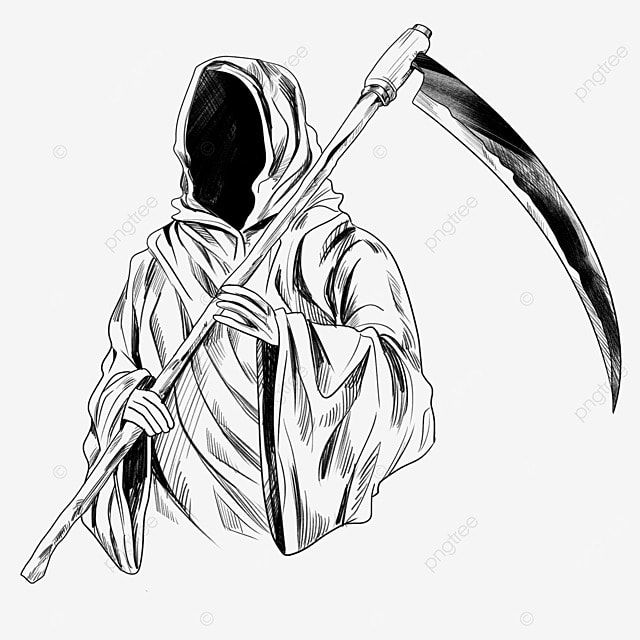
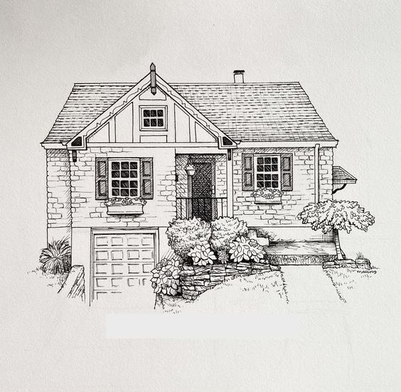
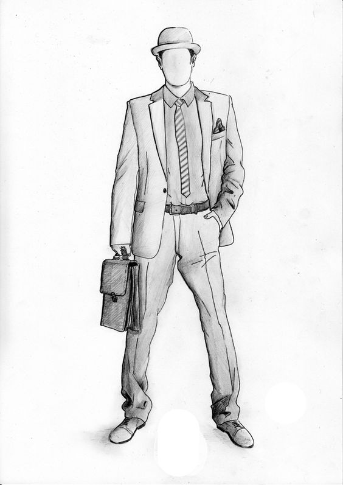
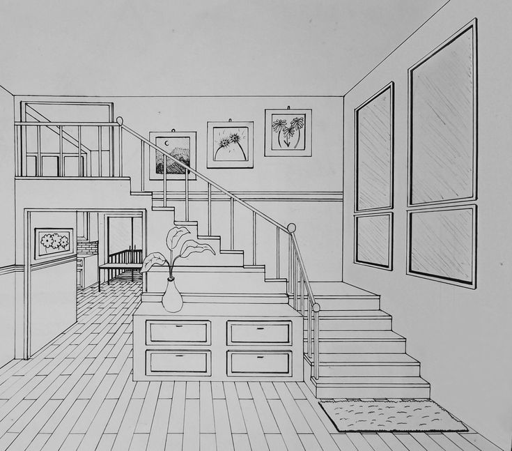

Certa vez encontrei um homem estranho me me deu uma bússola dourada dizendo que eu deveria encontrar o lar dos tesouros, só eu conseguiria alcança-los
você é abordado por dois homens armados
Você caminha normalmente pela estrada

Você é baleado e acaba por morrer no local

você já não tem como continuar, então, decide voltar para casa.

Você retorna para casa alegre por conseguir um bom dinheiro por aquela bússola que era de fato banhada em ouro

Você volta para casa e passa a usar a bússola de enfeite em sua sala.